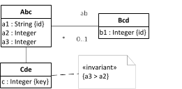
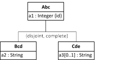
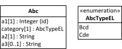
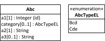
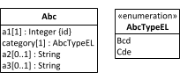
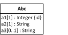

| 8. Quiz Questions | ||
|---|---|---|
 | Chapter 12. Subtyping and Inheritance |  |
| 8. Quiz Questions | ||
|---|---|---|
| | Chapter 12. Subtyping and Inheritance | |
If you would like to look up the answers for the following quiz questions, you can check our discussion forum. If you don't find an answer in the forum, you may create a post asking for an answer to a particular question.
Consider the following class model:
|  |
Which of the following statements are true? Select one or more:
☐ All instances of Cde have a value for attribute a1.
☐ The standard identifier of Cde is a1.
☐ All instances of Cde may have an object reference ab referencing an object of type Bcd.
☐ Direct instances of Abc may have a value for c.
☐ For any object of type Abc the value of a3 must be greater than the value of a2.
☐ For any object of type Cde the value of a3 must be greater than the value of a2.
☐ The standard identifier of Cde is c.
Consider the following class model:
|  |
In the case of such a simple class hierarchy, we can use the Class Hierarchy Merge design pattern where the entire class hierarchy is merged into a single class. Which of the following models describes the correct implementation of the Class Hierarchy Merge design pattern for the given Abc class hierarchy? Select one:
O
|  |
O
|  |
O
|  |
O
|  |
| |  | |
| 7. Subtyping and Inheritance in Computational Languages |  | Chapter 13. Subtyping with Plain JS |